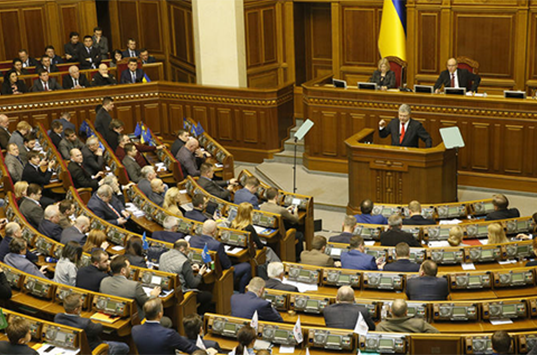
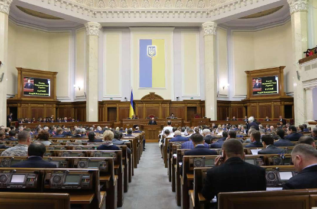

//= template/header.html

<div class="container">

	<nav aria-label="breadcrumb">
		<ol class="breadcrumb">
			<li class="breadcrumb-item"><a href="#">Головна</a></li>
			<li class="breadcrumb-item active" aria-current="page">Парламентські слухання</li>
		</ol>
	</nav>

	<div class="category mt_60">
		<div class="row">
			<div class="col">
				<div class="card mb-4">
					<div class="card-img">
						
						<span class="overlay">Проведення парламентських слухань</span>
					</div>
					<div class="card-body">
						<h3 class="h3">Проведення парламентських слухань</h3>
						<a href="rishennya-pro-provedennya-parlamentskykh-slukhan.html" class="more">Докладніше</a>
					</div>
				</div>
			</div>
			<div class="col">
				<div class="card mb-4">
					<div class="card-img">
						
						<span class="overlay">Хроніка парламентських слухань</span>
					</div>
					<div class="card-body">
						<h3 class="h3">Хроніка парламентських слухань</h3>
						<a href="materialy-parlamentskykh-slukhan.html" class="more">Докладніше</a>
					</div>
				</div>
			</div>
			<div class="col"></div>
		</div>
	</div>
</div>


//= template/footer.html